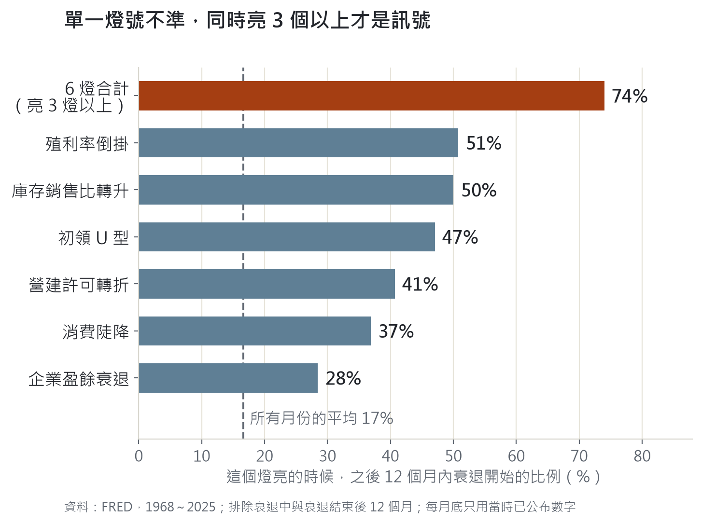
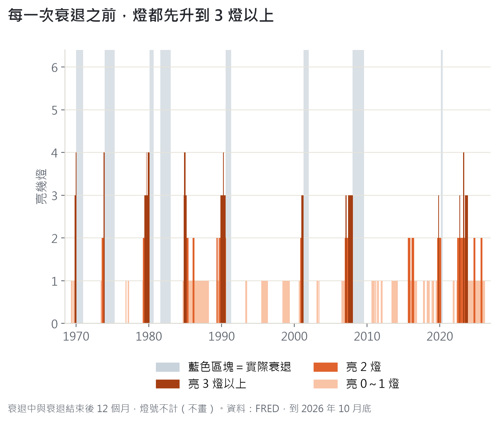
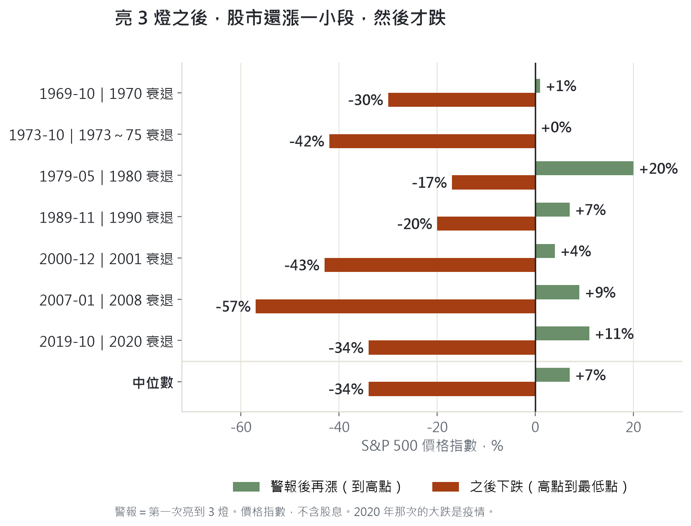

15 個候選指標，單看沒有一個通過；同時看 6 個，才找到能領先衰退 2～12 個月的訊號。但它不是賣出訊號：亮燈之後，股市還會再漲一小段。
結論：我想找一個能預告衰退的領先指標。看一棵樹找不到，要看整片森林：同時亮 3 個以上，才是訊號。
- 我先預先登記門檻，用 15 個候選指標，去對 1960 年以來 10 次股市大跌：沒有一個通過。
- 退一步，改找「衰退」，不找最準的一個，改看「同時亮幾個」：單一燈亮的時候，之後 12 個月衰退的比例是 28～51%；同時亮 3 個以上，是 74%。
- 1968～2025 年的八次衰退，七次在衰退前 2～12 個月亮到 3 燈。
- 但它不是賣出訊號。亮 3 燈之後，S&P 500 的中位數還會再漲 7%，之後才跌 34%；而且最近 15 年 3 次警報，只有 1 次之後真的衰退。
- 2026 年 10 月底，6 個燈全暗。
總經沒辦法準確預測報酬。如果做得到，總經專家早就發財了。我想要的比較小：在受重傷之前，提早看到一個警訊。
最直接的警訊，是衰退。所以我想找一個衰退的領先指標：它要在衰退之前亮，而且亮得有道理，不能是事後才知道的。
我先列了 15 個候選指標：初領失業金、實質消費、住宅投資、設備投資、庫存銷售比、殖利率倒掛、倒掛後回正、薩姆規則、信用利差、企業盈餘、油價、降息後又升息，還有總經惡化頻率。
為了不要事後調整，我在 2026 年 10 月 7 日先預先登記門檻：
結果是：15 個全部沒通過。
命中率高的，誤報也多；誤報少的，命中率又太低。
薩姆規則還有一個更尷尬的地方：1968 年以來八次衰退，除了 1981 年那一次（上一次衰退剛結束），其他七次在衰退開始前一年內，它一次都沒亮，要等衰退開始後 0～2 個月才亮（1973 年那次，開始後半年內都沒亮）。它是確認，不是預告。
景氣轉弱不是一個點，是一整片森林在掉葉子。資金先收緊，房子先賣不動；接著公司賺得少、貨堆在倉庫；再來裁員；最後，大家少花錢。這是一個可能的順序〔推論；實際上每次衰退各燈亮起的先後都不一樣，不是資料排出來的〕。
所以我改了兩件事：
從 15 個裡，我去掉重複的 2 個、歷史太短的 1 個、亮的時候衰退多半已經開始的（薩姆規則、信用利差、設備投資）、邏輯較薄的（倒掛後回正、油價暴漲、降息後又升息），留下 6 個：
規則：衰退中與衰退結束後 12 個月內，燈號不計（因為燈還沒熄，不代表下一次衰退）；每個月底數一次亮幾個。
先講兩個限制。第一，這 6 個燈是看過歷史之後才定案，所以下面的成績會偏樂觀〔推論〕。第二，消費、盈餘這類季資料用的是事後修正過的數字，不是當時第一次公布的版本，所以命中會被高估。
先看單一燈，和同時亮 3 個以上，差在哪裡：

▲ 1968～2025 年，排除衰退中與衰退結束後 12 個月。單一燈亮的時候，之後 12 個月衰退的比例是 28～51%；同時亮 3 個以上，是 74%。虛線是所有月份的平均，17%。
再看亮幾個燈，各是多少：
| 亮幾燈 | 之後 12 個月衰退開始 | 月數 |
|---|---|---|
| 0 | 6% | 255 |
| 1 | 7% | 155 |
| 2 | 37% | 52 |
| 3 以上 | 74% | 50 |

▲ 每一次衰退（藍色區塊）之前，燈都先升到 3 燈以上（深紅色）。1968～2025 年的八次衰退，七次在衰退前 2～12 個月亮到 3 燈（第八次是 1981 年，距上次衰退結束只有 13 個月，依規則燈號不計）。
森林找到了，接下來的問題是：燈亮了，我該怎麼辦？

▲ 7 次真的衰退，從第一次亮到 3 燈那個月算起：S&P 500 中位數還會再漲 7%（約 4 個月到高點），之後才跌 34%。那斯達克（6 次）是再漲 16%，之後跌 40%。
最多的一次再漲兩成，兩次幾乎沒有漲。但漲幅和後面的跌幅，不成比例。
事後看，這是一道簡單的選擇題：漲一兩成，跌三四成，誰都會選離場。但當下不是，因為燈亮的時候，市場多半還在漲，新聞還很樂觀。
而且要公平看，不能只挑真的衰退的那幾次算：
所以這個指標告訴你的是「風險升高」，不是「現在該賣」。
最近 15 年更尷尬。2011 年以後亮 3 燈以上的時段有 3 段：2019 年 10 月、2022 年 9 月、2023 年 3～10 月。只有第一段之後有衰退，也就是 2020 年的疫情。但那次是突發衝擊，2019 年燈亮起來的原因，跟疫情沒有關係〔推論〕。
2022～23 年是目前最大的疑問。倒掛、盈餘、庫存都亮了，經濟卻沒有衰退。我的解讀是暴力升息造成的短期現象〔我的解讀，不是證明〕，也可能是結構改變了。我不知道。
它量的是衰退，不是股災。亮 3 燈以上之後，12 個月內 S&P 500 跌 20% 以上的比例，只有 32%。
它的分辨力有限。我用「只用過去猜未來」的方式檢驗（1990～2025 年，每年 1 月只用當時已知的結果重估）：預測衰退的分辨力是 0.77，預測大盤跌 20% 只有 0.61（0.5 等於亂猜，1 等於完美）。
訊號變弱了。亮 3 燈以上之後衰退的比例，1968～1995 年是 81%，1996～2025 年是 65%。
樣本很少。衰退只有八次。
2026 年 10 月底，6 個燈全暗，歷史比例約 6%。2025 年 10 月亮 2 燈，之後降到 1 燈，2026 年 3 月起連續 8 個月全暗。
每個月 1 日更新：景氣衰退領先指標儀表板。11 月的讀數，12 月 1 日更新。
我找到的不是一個準的指標，是一個提高警覺的方法。全暗的時候，不用太顧慮總經，可以專心看產業趨勢；亮到 3 燈，才需要認真想：萬一衰退真的來了，我的部位撐得住嗎？
更短的心法、方法與盤感，我寫在粉專，入口在這裡：德克 mur mur 粉專。
資料與限制。資料：FRED（初領失業金、實質個人消費、營建許可、殖利率、企業盈餘、庫存與銷售、失業率）、Yahoo（S&P 500、那斯達克），1960～2026 年 10 月；衰退日期用 NBER。燈的概念多半來自 Izaax 的財訊專欄與書；門檻、預先登記與回測是我自己做的。限制：6 個燈是看過歷史後才定案，成績偏樂觀〔推論〕；季資料是事後修正過的數字；衰退只有八次；2022～23 年的失靈沒有解釋；價格指數不含股息。
本文只整理資料與推論，不是投資建議。
德克 mur mur｜研究整理，不構成任何投資建議。資料來源與限制見文末。